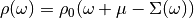
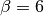

Two site Dynamical Mean-Field Theory¶
This document is about the work presented in the following publication:
- Potthoff, M. (2001). Two-site dynamical mean-field theory. Physical Review B, 64(16), 165114. http://dx.doi.org/10.1103/PhysRevB.64.165114
The code to generate this figures can be found inside Two Site DMFT examples.
The Dynamical mean field theory has become a valuable method to investigate the physics of strongly correlated electrons in a lattice. It consist of a procedure in which the original lattice problem is mapped into an effective impurity model that describes a single correlated impurity orbital embedded in an uncorrelated bath of conduction-band states. This mapping is a self-consistent one, where the bath parameters depend on the on-site impurity Green’s function.
The impurity model is crucial in the DMFT as it poses a highly non-trivial many-body problem that must be solved repeatedly, incrementing the cost of solving the problem computationally and limiting the applicability of the method.
There is no problem to treat the single-impurity Anderson model with a small number of lattice sites numerically exact. But for a finite number of sites, the self-consistent mapping between the Hubbard model into the impurity model is approximate. The exact solution of the effective impurity model is thus achieved at the expense of an approximate self-consistency.
Single band Hubbard model in the Bethe lattice¶
The single band Hubbard Hamiltonian reads:
The is hopping only between nearest neighbors. For a paramagnetic, spatially homogeneous phase the on-site Green Function is give by
(1)¶
In this case of the Bethe lattice, the self-energy is local in the limit of infinite coordination. The free density of states is
(2)¶
Single impurity Anderson model(SIAM)¶
The Hamiltonian reads:
(3)¶
The impurity Green function is given by
(4)¶
where the hybridization function is .
The DMFT self-consistency requires that
(5)¶
as the self-energy is required to be the same
In this fashion the original lattice problem is mapped onto the SIAM and can be solved by the iterative process that: Starts with a Guess of the Self-Energy, that allows to calculate through equation (1) the on-site lattice Greens Function. The DMFT Self-consistency (5) allows to use this Green function to determine a new hybridization function and thus the parameters of the effective SIAM. Then the impurity problem is solved to get a new estimate of the impurity self-energy that is used into a new cycle until self-consistency is achieved.
The two site single impurity model¶
The self-consistency condition (5) can be fulfilled only
for that is a bath with an infinite number of degrees
of freedom. This poses the SIAM as a many-body problem. The simplification now
is to construct a two site DMFT, where there is only an impurity and one bath site.
As such the only parameters left from the impurity model (3) are the one particle energy level of the bath
site and the hybridization strength  .
.
Thus the hybridization function reduces to
and the free impurity Green function is a two pole function
(6)¶
where , and . The interacting Green function has four poles and the self-energy two poles.
Self-consistency¶
In the Two site DMFT original self-consistency equations need to be reformulated
to be able to capture the desired physical behavior of the system in a such
simplified model. This mean to find two physically motivated conditions to fix
the bath parameters and .
In the limit of high frequencies the exact self-energy of the impurity problem (3) can be expanded in powers of :
(7)¶
where is the spin specific average occupancy of the impurity orbital:
Inserting the expansion (7) into equation (1) allows to find the high-frequency expansion of the on-site lattice Green function
(8)¶
where  is the variance of the non-
interacting density of states (2). This expansion has to relate the
fillings of the impurity model with the lattice model as such it is required that the fillings
in both models match.
is the variance of the non-
interacting density of states (2). This expansion has to relate the
fillings of the impurity model with the lattice model as such it is required that the fillings
in both models match.
(9)¶
where the band filling is calculated via
(10)¶
Equation (9) can be seen as an integral for of the original self-consistency condition (5) and the paramagnetic solution is enforced as the spin species are dealt equivalent.
The low-frequency limit of the self-energy can be expanded in powers of 
(11)¶
The definition of the quasiparticle weight for the metal behavior of the system is convenient . Inserting the expansion (11) with the definition of the quasiparticle weigh one obtains the coherent part of the on-site Green function:
(12)¶
On the other hand the coherent part of the impurity Green function is
If one where to compare the low frequency expansion of these coherent Green functions one obtains
where and . Since it becomes to complicated to find a link in these low frequency expansions, one performs the high-frequency expansion of the coherent Green functions to obtains
leading to the second self-consistency condition
(13)¶
Algorithm implementation¶
Using the two self-consistency conditions (9) and (13)
the bath parameters can be fixed and calculated self-consistently. One starts with
the model parameters and takes a guess
for  . That defines the two-site impurity model and can be
solved to find de average occupancy of the impurity
and using the Lehmann representation one finds , through the Dyson
equation one can extract the self-energy.
. That defines the two-site impurity model and can be
solved to find de average occupancy of the impurity
and using the Lehmann representation one finds , through the Dyson
equation one can extract the self-energy.
The self-energy yields the quasiparticle weight and through (13)
a new value for the hybridization strength . The self-energy is used
again in (1) to obtain the lattice Green function, which via
(10) yields the filling of the lattice sites and has to be
compared to the impurity occupancy. Then a new value for is
chosen to reduce the difference in occupancies between lattice and impurity models.
This cycle is performed until the self-consistency conditions are full-filled.
It is inconvenient to calculate the lattice Green function on each iteration to calculate later the lattice occupancy with (10), as the numerical pole broadening introduces a lot of numerical variation. Instead, given that the self-energy is a real two poled function, and on the Bethe lattice is purely local and momentum independent, the lattice filling can be directly calculated by
where  becomes the interacting density of states. This becomes much more favorable as only this real integral has to be calculated instead of the much more expensive hilbert transform of (1) and one does not need to include the line broadening at all.
Results¶
The Mott transition at half-filling¶
For the symmetric case of half-filling particle-hole symmetry requires to ensure the first self-consistency equation (9). One then follows to calculate the state of the system as the local Coulomb interaction is raised and one shows in the next figure the change of the quasiparticle weight at different temperatures.
Following the system state as the metallic behavior is lost. Higher temperatures are less capable of sustaining the metal solution and the system just drops into the insulating state.
The evolution of the spectral function is demonstrated in the next figures from example Following the Metal to Mott insulator Transition, accompanied by the plot of the self energy and the impurity Green function. It can be clearly seen that the self-energy has in general only 2 poles and the local Green function is in general a 4 poled function.
The structure of the spectral function is not as rich as a full DMFT calculation would provide. Nevertheless the transfer of spectral weight for low to high energy is clearly demonstrated with the formation of the upper an lower Hubbard bands as the remaining quasiparticle peak. There is the clear evidence of the 3 peak structure. The two site DMFT reduces the lattice Green function at very low temperatures to a function of 4 poles, 2 poles coming from the self-energy and the other 2 from the free impurity Green function (6).
Away of Half-filling¶
The self-consistency equations become more complicated to fulfill, as now one
has to search for the parameters at the same time for
a given target population and for a given local interaction. In the next figure
it is shown the quasiparticle weight decay as a function of increasing filling
for different values of the local interaction. In the empty band limit
for an arbitrary  . As
long as the system is away from half-filling it has a metallic behavior.
. As
long as the system is away from half-filling it has a metallic behavior.

The next plot show the expected value of the double occupation in the impurity. At low lattice filling, attibuted to the low electron population, double occupancy is low. When the system is subject to a local Coulomb interaction the double occupancy increases as the system approaches the half-filling regime and remains finite. When there is no double occupancy any more at half-filling.
The next figure shows
this parameters as a function of filling for the case . In this
case the hybridization strength is finite for and the
system becomes less correlated for decreasing filling. Consequently has
to increase until  for ().
for ().
As for at half-filling and it decreases with decreasing
filling until it diverges on appraching the empty band limit where
, as is necessary to ensure a vanishing
occupancy of the impurity orbital for finite . For the usable chemical
potential to dope the system it is only spanned in the range of bandwidth of the
non interacting density of states.
The structure of the spectral function change under doping is presented in the next figure. The strong simplification of the two site DMFT approximation allows only the visualization of the 3 “peaks” which always present a disconnected structure. The quasiparticle peak never joins the lower Hubbard band at low fillings.
When analyzing the double occupancy of the impurity site
In Matsubara frequencies¶
The twosite DMFT can also be treated in the imaginary axis using the Matsubara
frequencies. Since one is only treating the analytic continuation into the
imaginary axis, all equations are kept the same one only needs to change
 , where
, where  .
The most substantial change comes from the
definition of the quasiparticle weight were it becomes
.
The most substantial change comes from the
definition of the quasiparticle weight were it becomes
Until now only the treatment at half-filling is handled, because in this situation the particle-hole symmetry requires and (9) is automatically fulfilled. The next figure shows the drop in the quasiparticle weight as the local interaction is raised. It is very similar to the one presented for the real frequencies. First an most noticeable if that a  the quasiparticle weight doesn’t drop completely to zero at , but that the metallic solution is sustained up to . In general the metallic solutions are sustained for larger interaction values(although not directly noticeable) that the calculations performed in the real frequency axis.
The search for the
coexistence region of the metallic and insulating solutions is not possible
in the 2 site DMFT approximation as one only uses equation (13)
to update the bath hybridization and starting from the insulating solution with
 does not allow the system to escape the insulating case.
does not allow the system to escape the insulating case.

The behavior of the Green function and the self-energy is much more abstract than in the real case. Here there are no poles to be seen. The next figures from example Following the Metal to Mott insulator Transition show the imaginary parts of the Green function and self-energy at different local interaction strength. In the case of the self-energy the behavior is the same know from my previous training with IPT. For the Green function there was the behavior it should go to the bandwidth value at at zero frequency, this know condition is not met neither was it enforced. In the case of the 2 site DMFT the Green Function always “goes” through zero although there is no zero frequency in the fermionic case.


{kind=link}
{kind=link}
{kind=link}
{kind=link}
{kind=link}
{kind=link}